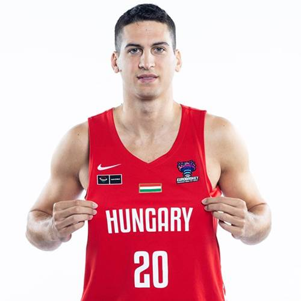
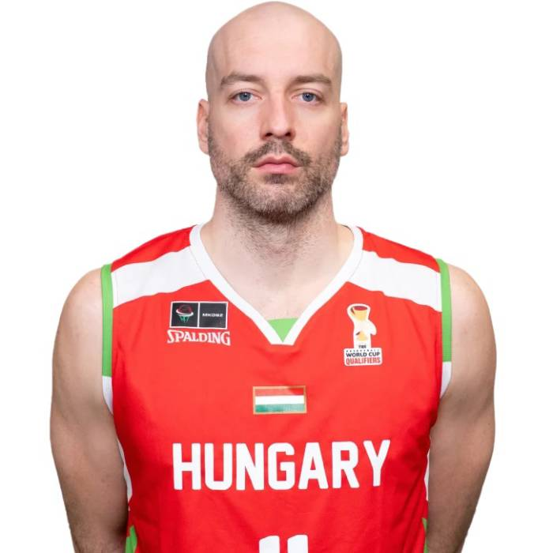
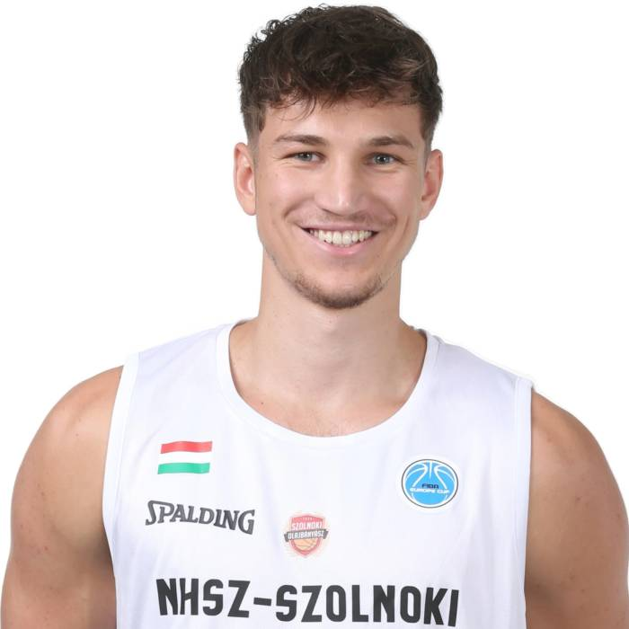
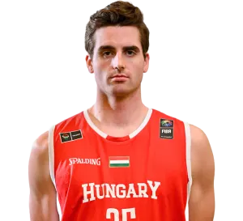

Perl Zoltán
Irányító (PG)
- Átlagpont: 25,7
- Gólpassz: 5,2
- Labdavesztés: alacsony
Klasszikus irányító, aki érti a játék ritmusát és jól olvassa a helyzeteket.
Fő erőssége a pick-and-roll, az átlátás a pályán, a középtávoli dobások és a csapattársak helyzetbe hozása.

Benke Szilárd
Dobóhátvéd (SG)
- Triplaszázalék: 41%
- Catch & shoot helyzetekben megbízható
- Gyors ritmusváltás támadásban
Elsősorban külső dobásokból él, gyors elengedéssel és jó helyzetfelismeréssel.
Akkor érzi jól magát, ha folyamatosan mozgásban van és labda nélkül is dolgozhat.

Lukács Norbert
Kiscsatár (SF)
- Erős egy-egy elleni védekezés
- Meccsenként átlagosan 3 szerzett labda
- Rugalmasan vált több poszton
Védekezésben kiemelkedő, stabil lábmunkával és jó időzítéssel.
Szívesen fogja az ellenfél legjobb periméter játékosát, és támadásban is hasznos kiegészítő ember.

Nate Reuvers
Erőcsatár / Center (PF/C)
- Lepattanó: 12,4 meccsenként
- Második esélyből szerzett pontokban erős
- Stabil palánk alatti jelenlét
Elsősorban a palánk alatti munkát vállalja magára: ütközik, zár, lepattanózik.
Nem feltétlen látványos, de fontos szereplő, aki nélkül nehezebb stabilan nyerni.